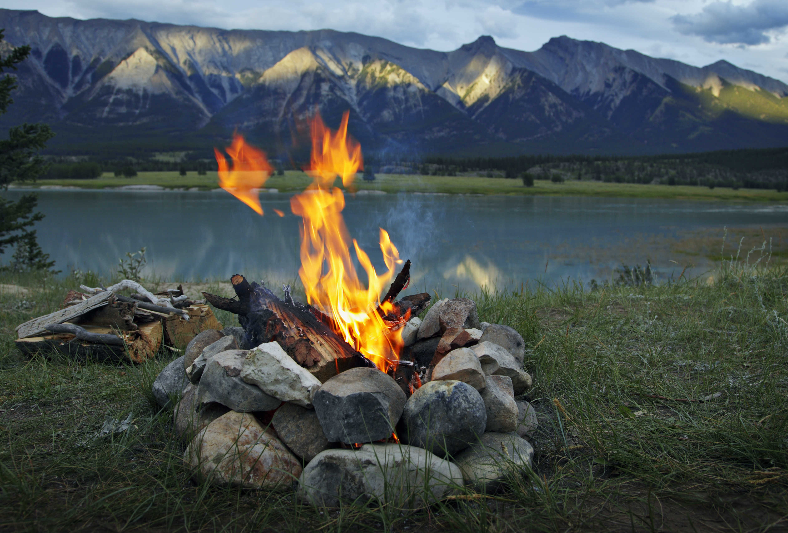

LOGO
LOGIN
CHECK OUT THE NEWEST POSTS:

CAMPFIRECRAFTER
MARCH 22 2024 23:31
The Art of Campfire Cooking
There's something magical about cooking over an open fire
while camping. The crackling sound of burning wood, the
warmth of the flames, and the aroma of food wafting through
the air create a unique culinary experience. From classic
s'mores to gourmet meals like grilled vegetables and
marinated meats, campfire cooking invites creativity.
With the right tools—think cast iron skillets or
skewers—you can transform simple ingredients into delicious
meals under the stars. Don't forget to share your favorite
recipes with fellow campers to elevate everyone's outdoor
dining experience!
3.5K Likes
203 Comments

TRAILBLAZER_ADVENTURES
SEPTEMBER 26 2024 12:47
Campfire Stories
Hey everyone! I just got back from a fantastic weekend
camping trip, and I’m still buzzing from all the fun we
had. Each night, we gathered around the campfire,
roasting marshmallows and sharing our wildest camping
stories. It’s amazing how a campfire can bring people
together, right? One of my friends told a hilarious story
about the time he mistook a raccoon for his dog in the
middle of the night—he swore he was just trying to play
fetch! What’s your favorite campfire tale? I’d love to
hear about the craziest or funniest thing that’s happened
to you while camping. Let’s swap stories!

2.7k Likes
345 Comments

TENT_TALES
SEPTEMBER 28 2024 11:45
campfire snacks
Hey fellow campers! I just got back from a camping trip,
and I realized that snacks can really make or break the
experience. Of course, I always bring marshmallows for
roasting, but I’m looking to mix things up this season.
I’ve heard great things about homemade trail mix, and I’m
tempted to try grilled fruit over the campfire—who knew
that could be a thing? I also brought along some
chocolate-covered pretzels, which were a hit around the
campfire. What are your go-to snacks for camping? I’d love
to hear any delicious camping snack ideas you all swear by!
Share your favorites, and let’s create the ultimate camping
snack list!

2.7k Likes
345 Comments

IFRICKINGLOVECAMPING
SEPTEMBER 28 2024 14:08
Camping with pets?
Has anyone here gone camping with their furry friends?
I took my dog along on my last trip, and it was an absolute
blast! He loved running around the campsite, and he even
jumped into the lake to cool off—definitely the highlight
of his trip! I’m curious about any tips you have for camping
with pets, like how to keep them safe and comfortable.
For instance, I found that bringing his favorite blanket
made him feel right at home in the tent. Would love to
hear your experiences and any advice you have for making
camping with pets a smooth and enjoyable adventure!

2.7k Likes
345 Comments

FORESTEXPLORER22
SEPTEMBER 30 2024 9:32
Best Camping Locations!
I’m looking for new camping spots to explore!
I usually stick to state parks because they’re
nearby and convenient, but I’m ready for a new
adventure. Recently, I’ve been hearing amazing
things about national forests and remote
campgrounds that are less crowded. Do you have
any favorite camping locations that you’d
recommend? I’m open to suggestions, whether they’re
close to home or a bit of a drive away. I love
discovering hidden gems where I can disconnect
from the hustle and bustle and enjoy nature. Let’s
share our favorite spots and inspire each other
to explore new places!

2.7k Likes
345 Comments